건설안전산업기사 (2016-03-06 기출문제)
1과목: 산업안전관리론
1. 다음 ( )안에 알맞은 것은?
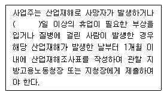
- 3
- 4
- 5
- 7
(정답률: 74%)

2. 산업안전보건법상 아세틸렌 용접장치 또는 가스집한 용접장치를 사용하여 행하는 금속의 용접ㆍ용단 또는 가열작업자에게 특별안전ㆍ보건교육을 시키고자 할 때의 교육 내용이 아닌 것은?
- 용접흄ㆍ분진 및 유해광선 등의 유해성에 관한 사항
- 작업방법ㆍ작업순서 및 응급처지에 관한 사항
- 안전밸브의 취급 및 주의에 관한 사항
- 안전기 및 보호구 취급에 관한 사항
(정답률: 65%)
3. 산업안전보건법상 프레스 작업 시 작업시작 전 점검사항에 해당하지 않는 것은?
- 클러치 및 브레이크의 기능
- 매니퓰레이터(manipulator) 작동의 이상 유무
- 프레스의 금형 및 고정볼트 상태
- 1행정 1정지기구ㆍ급정지장치 및 바상정지 장치의 기능
(정답률: 66%)
4. 교육훈련의 효과는 5관을 최대한 활용하여야 하는데 다음 중 효과가 가장 큰 것은?
- 청각
- 시각
- 촉각
- 후각
(정답률: 77%)
5. 재해원인을 직접원인과 간접원인으로 나눌 때, 직접원인에 해당하는 것은?
- 기술적 원인
- 관리적 원인
- 교육적 원인
- 물적 원인
(정답률: 80%)
6. 안전관리에 관한 계획에서 실시에 이르기까지 모든 권한이 포괄적이며 하향적으로 행사되며, 전문 안전담당 부서가 없는 안전관리조직은?
- 직계식 조직
- 참모식 조직
- 직계-참모식 조직
- 안전보건 조직
(정답률: 77%)
7. 연간 총 근로시간 중에 발생하는 근로손실일수를 1000시간 당 발생하는 근로손실일수로 나타내는 식은?
- 강도율
- 도수율
- 연천인율
- 종합재해지수
(정답률: 60%)
8. 성공적인 리더가 갖추어야 할 특성으로 가장 거리가 먼 것은?
- 강한 출세 욕구
- 강력한 조직 능력
- 미래지향적 사고 능력
- 상사에 대한 부정적인 태도
(정답률: 85%)
9. 레빈(Lewin)의 법칙 중 환경조건(E)이 의미하는 것은?
- 지능
- 소질
- 적성
- 인간관계
(정답률: 78%)
10. TBM(Tool Box Meeting)의 의미를 가장 잘 설명한 것은?
- 지시나 명령의 전달회의
- 공구함을 준비한 후 작업하라는 뜻
- 작업원 전원의 상호대화로 스스로 생각하고 납득하는 작업장 안전회의
- 상사의 지시된 작업내용에 따른 공구를 하나하나 준비해야 한다는 뜻
(정답률: 83%)
11. 산업안전보건법상 바탕은 흰색, 기본모형은 빨간색, 관련 부호 및 그림은 검은색을 사용하는 안전ㆍ보건표지는?
- 안전복착용
- 출입금지
- 고온경고
- 비상구
(정답률: 65%)
12. 방독마스크의 흡수관의 종류와 사용조건이 옳게 연결된 것은?
- 보통가스용 - 산화금속
- 유기가스용 - 활성탄
- 일산화탄소용 - 알칼리제제
- 암모니아용 - 산화금속
(정답률: 62%)
13. 일선 관리감독자를 대상으로, 작업지도기법, 작업개선기법, 인간관계 관리기법 등을 교육하는 방법은?
- ATT(American Telephone & Telegram Co.)
- MTP(Management Training Program)
- CCS(Civil Communication Section)
- TWI(Training Within Industry)
(정답률: 71%)
14. 다음과 같은 착시현상에 해당하는 것은?
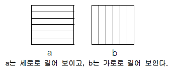
- 뮬러-라이어(Müler-Lyer)의 착시
- 헬호츠(Helmholz)의 착시
- 헤링(Hering)의 착시
- 포겐도프(Poggendorf)의 착시
(정답률: 57%)
15. 산업안전보건법상 중대재해에 해당하지 않는 것은?
- 추락으로 인하여 1명이 사망한 재해
- 건물의 붕괴로 인하여 15명의 부상자가 동시에 발생한 재해
- 화재로 인하여 4개월의 요양이 필요한 부상자가 동시에 3명 발생한 재해
- 근로환경으로 인하여 작업성질병자가 동시에 5명 발생한 재해
(정답률: 76%)
16. 교육 대상자수가 많고, 교육 대상자의 학습능력의 차이가 큰 경우 집단안전 교육방법으로서 가장 효과적인 방법은?
- 문답식 교육
- 토의식 교육
- 시청각 교육
- 상담식 교육
(정답률: 76%)
17. 매슬로우(A.H.Maslow)의 안전욕구 5단계 이론에서 각 단계별 내용이 잘못 연결된 것은?
- 1단계 : 자아실현의 욕구
- 2단계 : 안전에 대한 욕구
- 3단계 : 사회적 욕구
- 4단계 : 존경에 대한 욕구
(정답률: 77%)
18. 재해손실 코스트 방식 중 하인리히의 방식에 있어 1:4의 원칙 중 1에 해당하지 않는 것은?
- 재해예방을 위한 교육비
- 치료비
- 재해자에게 지급된 급료
- 재해보상 보험금
(정답률: 69%)
19. 하버드 학파의 5단계 교수법에 해당되지 않는 것은?
- 교시(Presentation)
- 연합(Association)
- 추론(Reasoning)
- 총괄(Generalization)
(정답률: 73%)
20. 피로의 예방과 회복대책에 대한 설명이 아닌 것은?
- 작업부하를 크게 할 것
- 정적 동작을 피할 것
- 작업속도를 적절하게 할 것
- 근로시간과 휴식을 적정하게 할 것
(정답률: 83%)
2과목: 인간공학 및 시스템안전공학
21. 음량 수준이 50phon일 때 sone 값은?
- 2
- 5
- 10
- 100
(정답률: 60%)
22. 다음 중 시스템 안전성 평가의 순서를 가장 올바르게 나열한 것은?
- 자료의 정리 → 정량적 평가 → 정성적 평가 → 대책 수립 → 재평가
- 자료의 정리 → 정성적 평가 → 정량적 평가 → 재평가 → 대책 수립
- 자료의 정리 → 정량적 평가 → 정성적 평가 → 재평가 → 대책 수립
- 자료의 정리 → 정성적 평가 → 정량적 평가 → 대책 수립 → 재평가
(정답률: 66%)
23. 조정반응비율(C/R비)에 관한 설명으로 틀린 것은?
- 조종장치와 표시장치의 물리적 크기와 성질에 따라 달라진다.
- 표시장치의 이동거리를 조종장치의 이동거리로 나눈 값이다.
- 조종반응비율이 낮다는 것은 민감도가 높다는 의미이다.
- 최적의 조종반응비율은 조종장치의 조종시간과 표시 장치의 이동시간이 교차하는 값이다.
(정답률: 51%)
24. 청각적 표시장치 지침에 관한 지침에 관한 설명으로 틀린 것은?
- 신호는 최소한 0.5~1초 동안 지속한다.
- 신호는 배경소음과 다른 주파수를 이용한다.
- 소음은 양쪽 귀에, 신호는 한쪽 귀에 들리게 한다.
- 300m 이상 멀리 보내는 신호는 2000Hz 이상의 주파수를 사용한다.
(정답률: 62%)
25. 설비의 보전과 가동에 있어 시스템의 고장과 고장 사이의 시간 간격을 의미하는 용어는?
- MTTR
- MDT
- MTBF
- MTBR
(정답률: 57%)
26. FMEA의 위험성 분류 중 “카테고리 2”에 해당 되는 것은?
- 영향 없음
- 활동의 지연
- 사명 수행의 실패
- 생명 또는 가옥의 상실
(정답률: 46%)
27. 인간-기계 시스템 설계 과정의 주요 6단계를 올바른 순서로 나열한 것은?
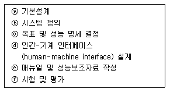
- ⓒ → ⓑ → ⓐ → ⓓ → ⓔ → ⓕ
- ⓐ → ⓑ → ⓒ → ⓓ → ⓔ → ⓕ
- ⓑ → ⓒ → ⓐ → ⓔ → ⓓ → ⓕ
- ⓒ → ⓐ → ⓑ → ⓔ → ⓓ → ⓕ
(정답률: 63%)
28. 에너지대사율(Relative Metabolic Rate)에 관한 설명으로 틀린 것은?
- 작업대사량은 작업 시 소비에너지와 안정 시 소비에너지의 차로 나타낸다.
- RMR은 작업대사량을 기초대사량으로 나눈 값이다.
- 산소소비량을 측정할 때 더글라스백(Douglas bag)을 이용한다.
- 기초대사량은 의자에 앉아서 호흡하는 동안에 측정한 산소소비량으로 구한다.
(정답률: 61%)
29. 작업자가 소음 작업환경에 장기간 노출되어 소음성 난청이 발병하였다면 일반적으로 청력 손실이 가장 크게 나타나는 주파수는?
- 1000Hz
- 2000Hz
- 4000Hz
- 6000Hz
(정답률: 58%)
30. 관측하고자 하는 측정값을 가장 정확하게 읽을 수 있는 표시장치는?
- 계수형
- 동침형
- 동목형
- 묘사형
(정답률: 72%)
31. 페일 세이프(fail-safe)의 원리에 해당되지 않는 것은?
- 교대 구조
- 다경로하중 구조
- 배타설계 구조
- 하중경감 구조
(정답률: 52%)
32. 동전던지기에 앞면이 나올 확률이 0.7이고, 뒷면이 나올 확률이 0.3일 때, 앞면이 나올 사건의 정보량(A)과 뒷면이 나올 사건의 정보량(B)은 각각 얼마인가?
- A : 0.88bit, B : 1.74bit
- A : 0.51bit, B : 1.74bit
- A : 0.88bit, B : 2.25bit
- A : 0.51bit, B : 2.25bit
(정답률: 56%)
33. 고온 작업자의 고온 스트레스로 인해 발생하는 생리적 영향이 아닌 것은?
- 피부 온도의 상승
- 발한(sweating)의 증가
- 심박출량(cardiac output)의 증가
- 근육에서의 젖산 감소로 인한 근육통과 근육피로 증가
(정답률: 62%)
34. 인체측정치를 이용한 설계에 관한 설명으로 옳은 것은?
- 평균치를 기준으로 한 설계를 제일 먼저 고려한다.
- 자세와 동작에 따라 고려해야 할 인체측정 치수가 달라진다.
- 의자의 깊이와 너비는 작은 사람을 기준으로 설계한다.
- 큰 사람을 기준으로 한 설계는 인체측정치의 5%tile을 사용한다.
(정답률: 53%)
35. FT도에 사용되는 논리기호 중 AND 게이트에 해당하는 것은?
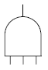
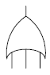
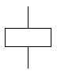
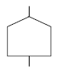
(정답률: 74%)
36. 옥내 조명에서 최적 반사율의 크기가 작은 것부터 큰 순서대로 나열된 것은?
- 벽 ＜ 천장 ＜ 가구 ＜ 바닥
- 바닥 ＜ 가구 ＜ 천장 ＜ 벽
- 가구 ＜ 바닥 ＜ 천장 ＜ 벽
- 바닥 ＜ 가구 ＜ 벽 ＜ 천장
(정답률: 77%)
37. 다음 중 일반적으로 가장 신뢰도가 높은 시스템의 구조는?
- 직렬연결구조
- 병렬연결구조
- 단일부품구조
- 직ㆍ병렬 혼합구조
(정답률: 61%)
38. 중량물을 반복적으로 드는 작업의 부하를 평가하기 위한 방법이 NIOSH 들기지수를 적용할 때 고려되지 않는 항목은?
- 들기빈도
- 수평이동거리
- 손잡이 조건
- 허리 비틀림
(정답률: 54%)
39. 결함수분석법에 있어 정상사상(top event)이 발생하지 않게 하는 기본사상들의 집합을 무엇이라고 하는가?
- 컷셋(cut set)
- 페일셋(fail set)
- 트루셋(truth set)
- 패스셋(path set)
(정답률: 62%)
40. 그림의 FT도에서 최소 컷셋(minimal cet set)으로 옳은 것은?
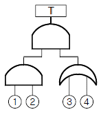
- {1, 2, 3, 4}
- {1, 2, 3}, {1, 2, 4}
- {1, 3, 4}, {2, 3, 4}
- {1, 3}, {1, 4}, {2, 3} , {2, 4}
(정답률: 65%)
3과목: 건설시공학
41. 다음 중 파내기 경사각이 가장 큰 토질은?
- 습윤 모래
- 일반 자갈
- 건조한 진흙
- 건조한 보통흙
(정답률: 56%)
42. 서중콘크리트의 특징에 관한 설명으로 옳지 않은 것은?
- 콘크리트의 단위수량이 증가한다.
- 콘크리트의 응결이 촉진된다.
- 균열이 발생하기 쉽다.
- 슬럼프 로스가 발생하지 않는다.
(정답률: 55%)
43. 철근의 가공에 관한 설명 중 옳지 않은 것은?
- 한 번 구부린 철근은 다시 펴서 사용해서는 안 된다.
- 철근은 시어 커터(shear cutter)나 전동톱에 의해 절단 한다.
- 인력에 의한 절곡은 규정상 불가하다.
- 철근은 열을 가하여 절단하거나 절곡해서는 안 된다.
(정답률: 56%)
44. 지하 4층 상가건물 터파기공사 시 흙막이 오픈컷 방식을 적용하고 지보공 없이 넓은 작업공간을 확보하고 기계화 시공을 실시하여 공기단축을 하고자 할 때 가장 적합한 공법은?
- 비탈지운 오픈컷공법
- 자립공법
- 버팀대공법
- 어스앵커공법
(정답률: 64%)
45. 그림과 같은 줄기초 파기에서 파낸 흙을 한 번에 운반 하고자 할 때 4ton 트럭 약 몇 대가 필요한가? (단, 파낸 흙의 부피증가율은 20%, 파낸 흙의 단위중량은 1.8t/m3)
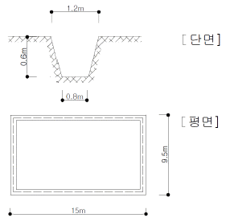
- 10대
- 16대
- 20대
- 25대
(정답률: 57%)
46. 철골공사에 활용되는 고력볼트 M24의 표준구멍의 직경으로 옳은 것은?
- 25mm
- 26mm
- 27mm
- 28mm
(정답률: 50%)
47. 철근보관 및 취급에 관한 설명으로 옳지 않은 것은?
- 철근고임대 및 간격재는 습기방지를 위하여 직사일광을 받는 곳에 저장한다.
- 철근저장은 물이 고이지 않고 배수가 잘되는 곳이어야 한다.
- 철근저장 시 철근의 종별, 규격별, 길이별로 적재한다.
- 저장장소가 바닷가 해안 근처일 경우에는 창고 속에 보관하도록 한다.
(정답률: 78%)
48. 시멘트 혼화재로써 규소합금 제조 시 발생하는 폐가스를 집진하여 얻어진 부산물의 초미립자(1㎛ 이하)로서 고강도 콘크리트를 제조하는데 사용하는 혼화재는?
- 플라이 애쉬
- 실리카 흄
- 고로 슬래그
- 포졸란
(정답률: 49%)
49. 철근 콘크리트 공사에서 거푸집의 역할에 관한 설명으로 옳지 않은 것은?
- 콘크리트의 응결과 경화를 촉진시킨다.
- 콘크리트를 일정한 형상과 치수로 유지시킨다.
- 콘크리트의 수분누출을 방지한다.
- 콘크리트에 대한 외기의 영향을 방지한다.
(정답률: 64%)
50. 철골공사에서 용접검사 중 초음파 탐상법의 특징이 아닌 것은?
- 기록성이 없다.
- 미소한 blow-hole의 검출이 가능하다.
- 검사속도가 빠른 편이다.
- 인체에 위험을 미치지 않는다.
(정답률: 53%)
51. 도급계약서에 첨부하지 않아도 되는 서류는?
- 설계도면
- 시방서
- 시공계획서
- 현장설명서
(정답률: 51%)
52. 콘크리트의 슬럼프를 측정할 때 다짐봉으로 모두 몇 번을 다져야 하는가?
- 30회
- 45회
- 60회
- 75회
(정답률: 54%)
53. 콘크리트 공사 시 거푸집 측압의 증가 요인에 관한 설명으로 옳지 않은 것은?
- 타설 속도가 빠를수록 증가한다.
- 슬럼프가 클수록 증가한다.
- 다짐이 적을수록 증가한다.
- 경화속도가 늦을수록 증가한다.
(정답률: 67%)
54. 콘크리트 표준시방서에 따른 거푸집 존치기간이 가장 긴 것은?
- 보 밑면
- 기둥
- 보 측면
- 벽
(정답률: 71%)
55. 트렌치와 같은 도랑파기에 가장 적합한 장비명은?
- 불도저
- 리퍼
- 백호우
- 파워쇼벨
(정답률: 67%)
56. 건축공사 기간을 결정하는 요소 중 1차적으로 가장 큰 영향을 주는 것은?
- 건물의 구조 및 규모
- 시공자의 능력
- 금융사정 및 노무사정
- 발주자 측의 요구
(정답률: 74%)
57. 발주자와 수급자의 상호 신뢰를 바탕으로 팀을 구성해서 프로젝트의 성공과 상호이익 확보를 위하여 공동으로 프로젝트를 집행 및 관리하는 공사계약 방식은?
- BOT 방식
- 파트너링 방식
- CM 방식
- 공동도급 방식
(정답률: 60%)
58. 네트워크 공정표에서 결합점이 가지는 여유시간을 무엇이라 하는가?
- 액티비티(Activity)
- 더미(Dummy)
- 패스(Path)
- 슬랙(Slack)
(정답률: 62%)
59. 피어 기초공사와 가장 거리가 먼 용어는?
- 트레미 관
- 디젤 해머
- 벤토나이트 액
- 케이싱 관
(정답률: 63%)
60. 현장개설 후 자재수급 계획 시 필요조건이 아닌 것은?
- 자재 명세서
- 납입 계획서
- 발주ㆍ구입시기
- 세금계산서
(정답률: 73%)
4과목: 건설재료학
61. 화재에 의한 목재의 가연 발생을 막기 위한 방화법 중 옳지 않은 것은?
- 유성페인트 도포
- 난연처리
- 불연성 막에 의한 피복
- 대 단면화
(정답률: 63%)
62. 보통 포틀랜드시멘트와 비교한 고로시멘트의 특징으로 옳지 않은 것은?
- 장기강도가 크다.
- 해수나 하수 등에 대한 저항성이 우수하다.
- 미분말로서 초기강도 발현이 용이하다.
- 초기 수화열이 낮다.
(정답률: 51%)
63. 일반적으로 목재의 강도 중 가장 작은 것은?
- 압축강도
- 전단강도
- 인장강도
- 휨강도
(정답률: 58%)
64. 단열재의 특성에서 전열의 3요소가 아닌 것은?
- 전도
- 대류
- 복사
- 결로
(정답률: 68%)
65. 수경성 미장재료를 시공할 때 주의사항이 아닌 것은?
- 적절한 통풍을 필요로 한다.
- 물을 공급하여 양생한다.
- 습기가 있는 장소에서 시공이 유리하다.
- 경화 시 직사일광 건조를 피한다.
(정답률: 51%)
66. 다음 합성수지 중 투명도가 가장 큰 것은?
- 페놀수지
- 메타크릴수지
- 네오프렌수지
- A.B.S수지
(정답률: 48%)
67. 시멘트 혼화재료 중 연행공기를 발생시켜 볼베어링 효과가 나타나도록 하는 것은?
- 포졸란
- 플라이애시
- AE제
- 경화 촉진제
(정답률: 60%)
68. 점토의 종류와 제품과의 관계를 나타낸 것 중 옳지 않은 것은?
- 토기 - 벽돌
- 자기 - 기와
- 도기 - 내장타일
- 석기 - 외장타일
(정답률: 62%)
69. 바닥강화재의 사용목적과 가장 거리가 먼 것은?
- 내마모성 증진
- 내화학성 증진
- 분진방지성 증진
- 내수성 증진
(정답률: 44%)
70. 다음 중 방청도료와 가장 거리가 먼 것은?
- 알루미늄 페인트
- 역청질 페인트
- 워시 프라이머
- 오일 서페이스
(정답률: 55%)
71. 염화비닐과 질산비닐을 주원료로 하여 석면, 펄프 등을 충전제로 하고 안료를 혼합하여 롤러로 성형 가공한 것으로 폭 90cm, 두께 2.5mm 이하의 두루마리형으로 되어 있는 것은?
- 염화비닐 타일
- 아스팔트 타일
- 폴리스티렌 타일
- 비닐 시트
(정답률: 51%)
72. 각종 석재에 대한 설명으로 옳지 않은 것은?
- 대리석은 강도가 매우 높지만 내화성이 낮고 풍화되기 쉬우며 산에 약하기 때문에 실외용으로 적합하지 않다.
- 점판암은 박판으로 재취할 수 있으므로 슬레이트로서 지붕 등에 사용된다.
- 화강암은 견고하고 대형재를 생산할 수 있으며 외장재로 사용이 가능하다.
- 응회암은 화성암의 일종으로 내화벽 또는 구조재 등에 쓰인다.
(정답률: 45%)
73. 보통포틀랜드시멘트의 비중에 관한 설명으로 옳지 않은 것은?
- 동일한 시멘트의 경우에 풍화한 것일수록 비중이 작아 진다.
- 일반적으로 3.15 정도이다.
- 르샤틀리에의 비중병으로 측정된다.
- 소성온도와 상관없이 일정하며, 제조 직후의 값이 가장 작다.
(정답률: 57%)
74. 수밀콘크리트의 배합에 관한 설명으로 옳지 않은 것은?
- 배합은 콘크리트의 소요품질이 얻어지는 범위 내에서 단위수량 및 물결합재비를 가급적 적게 한다.
- 콘크리트의 소요 슬럼프는 가급적 크게 하고 210mm 이하가 되도록 한다.
- 콘크리트의 워커빌리티를 개선시키기 위해 공기연행제, 공기연행감수제 또는 고성능 공기연행감수제를 사용하는 경우라도 공기량은 4% 이하가 되게 한다.
- 물결합재비는 50% 이하를 표준으로 한다.
(정답률: 56%)
75. 목재의 방부제 처리법 중 가장 침투깊이가 깊어 방부효과가 크고 내구성이 양호한 것은?
- 침지법
- 도포법
- 가압주입법
- 상압주입법
(정답률: 54%)
76. 벽, 기둥 등의 모서리를 보호하기 위하여 미장바름질을 할 때 붙이는 보호용 철물은?
- 줄눈대
- 코너비드
- 드라이브 핀
- 조이너
(정답률: 78%)
77. 흡음재료의 특성에 대한 설명으로 옳은 것은?
- 유공판재료는 재료내부의 공기진동으로 고음역의 흡음효과를 발휘한다.
- 판상재료는 뒷면의 공기층에 강제진동으로 흡음효과를 발휘한다.
- 다공질재료는 적당한 크기나 모양의 관통구멍을 일정 간격으로 설치하여 흡음효과를 발휘한다.
- 유공판재료는 연질섬유판, 흡음텍스가 있다.
(정답률: 46%)
78. 다음 접착제 중에서 내수성이 가장 강한 것은?
- 아교
- 카세인
- 실리콘수지
- 혈액알부민
(정답률: 70%)
79. 시멘트의 저장과 관련된 기준으로 옳지 않은 것은?
- 3개월 이하 단기간 저장한 시멘트는 굳은 덩어리가 있더라도 사용이 가능하다.
- 시멘트를 쌓아올리는 높이는 13포대 이하로 하는 것이 바람직하다.
- 시멘트의 온도는 일반적으로 50℃정도 이하를 사용 하는 것이 좋다.
- 시멘트는 방습적인 구조로 된 사일로 또는 창고에 품종별로 구분하여 저장하여야 한다.
(정답률: 73%)
80. 알루미늄에 관한 설명으로 옳지 않은 것은?
- 250~300℃에서 풀림한 것은 콘크리트 등의 알칼리에 침식되지 않는다.
- 비중은 철의 1/3 정도이다.
- 전연성이 좋고 내식성이 우수하다.
- 온도가 상승함에 따라 인장강도가 급격히 감소하고 600℃에 거의 0이 된다.
(정답률: 62%)
5과목: 건설안전기술
81. 화물용 승강기를 설계하면서 와이어로프의 안전하중은 10ton 이라면 로프의 가닥수를 얼마로 하여야 하는가? (단, 와이어로프 한 가닥의 파단강도는 4ton이며, 화물용 승강기의 와이어로프의 안전율은 6으로 한다.)
- 10가닥
- 15가닥
- 20가닥
- 30가닥
(정답률: 61%)
82. 다음 중 건설공사관리의 주요 기능이라 볼 수 없는 것은?
- 안전관리
- 공정관리
- 품질관리
- 재고관리
(정답률: 65%)
83. 추락재해를 방지하기 위하여 10cm 그물코인 방망을 설치할 때 방망과 바닥면 사이의 최소 높이로 옳은 것은? (단, 설치된 방망의 단변 방향 길이 L=2m, 장변방향 방망의 지지간격 A=3m 이다.)
- 2.0m
- 2.4m
- 3.0m
- 3.4m
(정답률: 42%)
84. 다음은 작업으로 인하여 물체가 떨어지거나 날아올 위험이 있는 경우에 조치하여야 하는 사항이다. 빈 칸에 알맞은 내용으로 옳은 것은?
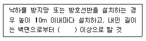
- 2m
- 2.5m
- 3m
- 3.5m
(정답률: 58%)
85. 안전난간의 구조 및 설치기준으로 옳지 않은 것은?
- 안전난간은 상부난간대, 중간난간대, 발끝막이판, 난간기둥으로 구성할 것
- 상부난간대와 중간난간대는 난간 길이 전체에 걸쳐 바닥면 등과 평행을 유지할 것
- 발끝막이판은 바닥면 등으로부터 10cm 이상의 높이를 유지할 것
- 안전난간은 구조적으로 가장 취약한 지점에서 가장 취약한 방향으로 작용하는 80kg 이상의 하중에 견딜수 있는 튼튼한 구조일 것
(정답률: 69%)
86. 철골공사에서 기둥의 건립작업 시 앵커볼트를 매립할 때 요구되는 정밀도에서 기둥중심은 기준선 및 인접기둥의 중심으로부터 얼마 이상 벗어나지 않아야 하는가?
- 3mm
- 5mm
- 7mm
- 10mm
(정답률: 44%)
87. 철공공사의 용접, 용단작업에 사용되는 가스의 용기는 최대 몇 ℃ 이하로 보존해야 하는가?
- 25℃
- 36℃
- 40℃
- 48℃
(정답률: 59%)
88. 강재 거푸집과 비교한 합판 거푸집의 특성이 아닌 것은?
- 외기 온도의 영향이 적다.
- 녹이 슬지 않음으로 보관하기가 쉽다.
- 중량이 무겁다.
- 보수가 간단하다.
(정답률: 61%)
89. 철골 작업을 중지해야 할 강설량 기준으로 옳은 것은?
- 강설량이 시간당 1mm 이상인 경우
- 강설량이 시간당 5mm 이상인 경우
- 강설량이 시간당 1cm 이상인 경우
- 강설량이 시간당 5cm 이상인 경우
(정답률: 64%)
90. 현장에서 가설통로의 설치 시 준수사항으로 옳지 않은 것은?
- 건설공사에 사용하는 높이 8m 이상인 비계다리에는 10m 이내마다 계단참을 설치할 것
- 수직갱에 가설된 통로의 길이가 15m 이상인 때에는 10m 이내마다 계단참을 설치할 것
- 경사가 15°를 초과하는 때에는 미끄러지지 아니하는 구조로 할 것
- 경사는 30° 이하로 할 것
(정답률: 62%)
91. 토석붕괴의 요인 중 외적 요인이 아닌 것은?
- 토석의 강도저하
- 사면, 법면의 경사 및 기울기의 증가
- 절토 및 성토 높이의 증가
- 공사에 의한 진동 및 반복하중의 증가
(정답률: 63%)
92. 콘크리트의 양생 방법이 아닌 것은?
- 습윤 양생
- 건조 양생
- 증기 양생
- 전기 양생
(정답률: 38%)
93. 말뚝박기 해머(hammer)중 연약지반에 적합하고 상대적으로 소음이 적은 것은?
- 드롭 해머(drop hammer)
- 디젤 해머(diesel hammer)
- 스팀 해머(steam hammer)
- 바이브로 해머(vibro hammer)
(정답률: 54%)
94. 사다리를 설치하여 사용함에 있어 사다리 지주 끝에 사용하는 미끄럼 방지재료로 적당하지 않은 것은?
- 고무
- 코르크
- 가죽
- 비닐
(정답률: 71%)
95. 다음은 지붕 위에서의 위험방지를 위한 내용이다. 빈칸에 알맞은 수치로 옳은 것은?
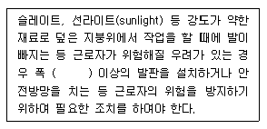
- 20cm
- 25cm
- 30cm
- 40cm
(정답률: 64%)
96. 옥외에 설치되어 있는 주행크레인에 대하여 이탈방지장치를 작동시키는 등 이탈 방지를 위한 조치를 하여야 하는 순간 풍속 기준은?
- 초당 10m 초과
- 초당 20m 초과
- 초당 30m 초과
- 초당 40m 초과
(정답률: 49%)
97. 공사종류 및 규모별 안전관리비 계상기준표에서 공사종류의 명칭에 해당되지 않는 것은?
- 철도ㆍ궤도신설공사
- 일반건설공사(병)
- 중건설공사
- 특수 및 기타건설공사
(정답률: 62%)
98. 철골조립 공사 중에 볼트작업을 하기 위해 주체인 철골에 매달아서 작업발판으로 이용하는 비계는?
- 달비계
- 말비계
- 달대비계
- 선반비계
(정답률: 54%)
99. 기계가 서 있는 지면보다 높은 곳을 파는 작업에 가장 적합한 굴착기계는?
- 파워셔블
- 드레그라인
- 백호우
- 클램쉘
(정답률: 66%)
100. 이동식 사다리를 설치하여 사용하는 경우의 준수 기준으로 옳지 않은 것은?
- 길이가 6m를 초과해서는 안된다.
- 다리의 벌림은 벽 높이의 1/4 정도가 적당하다.
- 미끄럼방지 발판은 인조고무 등으로 마감한 실내용을 사용하여야 한다.
- 벽면 상부로부터 최소한 90cm 이상의 연장길이가 있어야 한다.
(정답률: 50%)